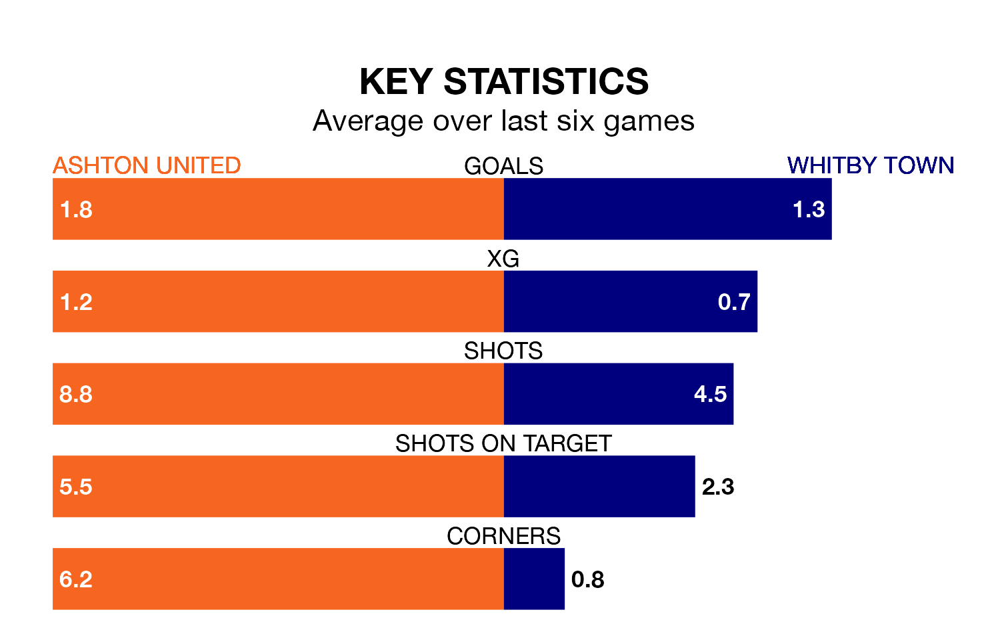

Ashton United host Whitby Town at Hurst Cross on Friday on the back of three consecutive wins in the Northern Premier League.
Ashton have picked up 11 points from their last six games, and they face a Whitby side who also won their last match, and have collected eight points from the last possible 18.
In the last 10 years, Ashton and Whitby have played each other on 16 occasions. Ashton won six of them, Whitby nine, and they drew once.
On average, Ashton scored 1.3 goals and Whitby 1.3 in those matches.
Their last meeting was on August 26, when Ashton won 3-1 away.
With 58 goals in 33 games so far this season, Ashton are scoring more than average in the league with 1.8 goals per game. And they are conceding fewer than average, letting in 51 goals at a rate of 1.5 per game.
Whitby, meanwhile, are average scorers, with 1.6 goals per game. They have conceded 1.1 goals per game.
Town are seventh in the table after 33 games, of which they have won 16 and drawn eight, earning 56 points.
United are two places behind the away side in ninth, with 15 wins and 10 draws putting them on 55 points.
Ashton's last match was on Saturday, a 5-2 win against Radcliffe Borough.
Whitby beat Matlock Town 5-1 last time out, also on Saturday.
Updated: 12:39 (UTC), 26/03/24